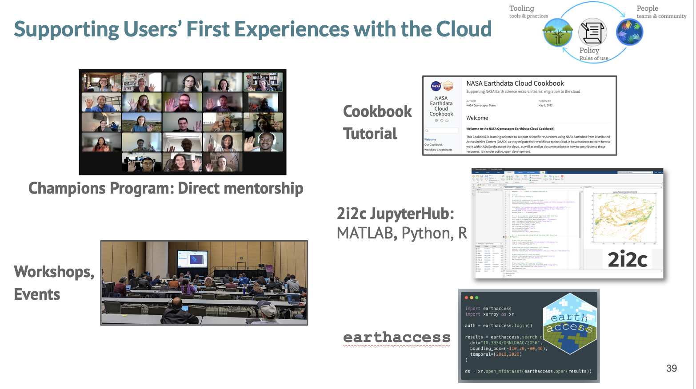
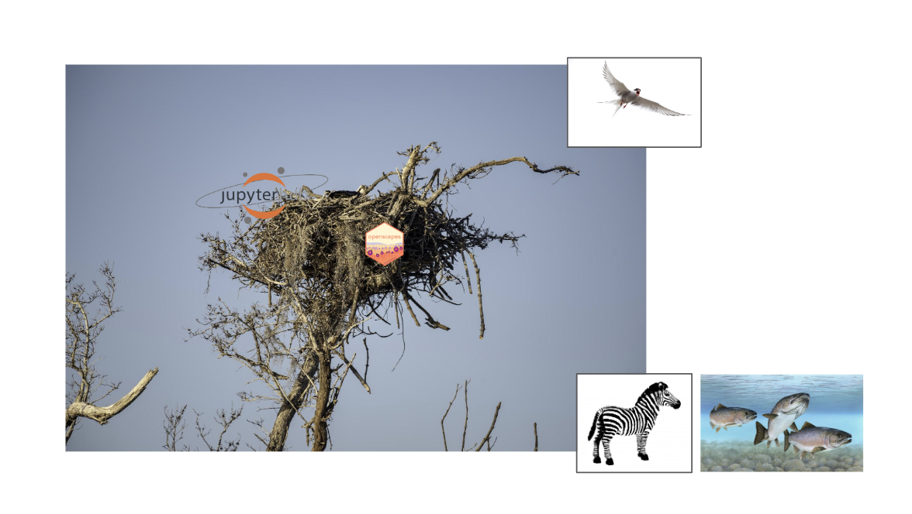
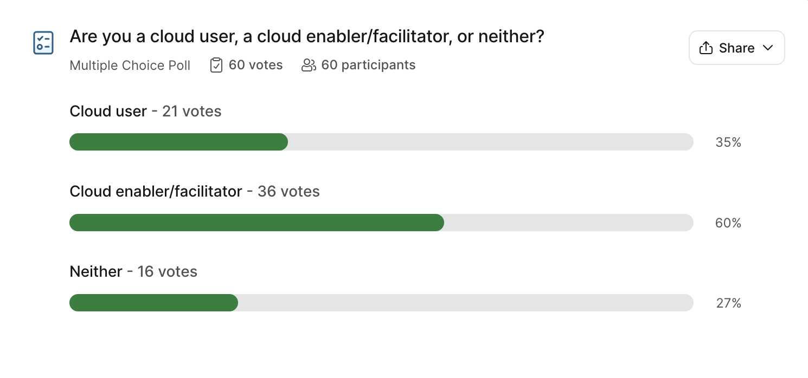
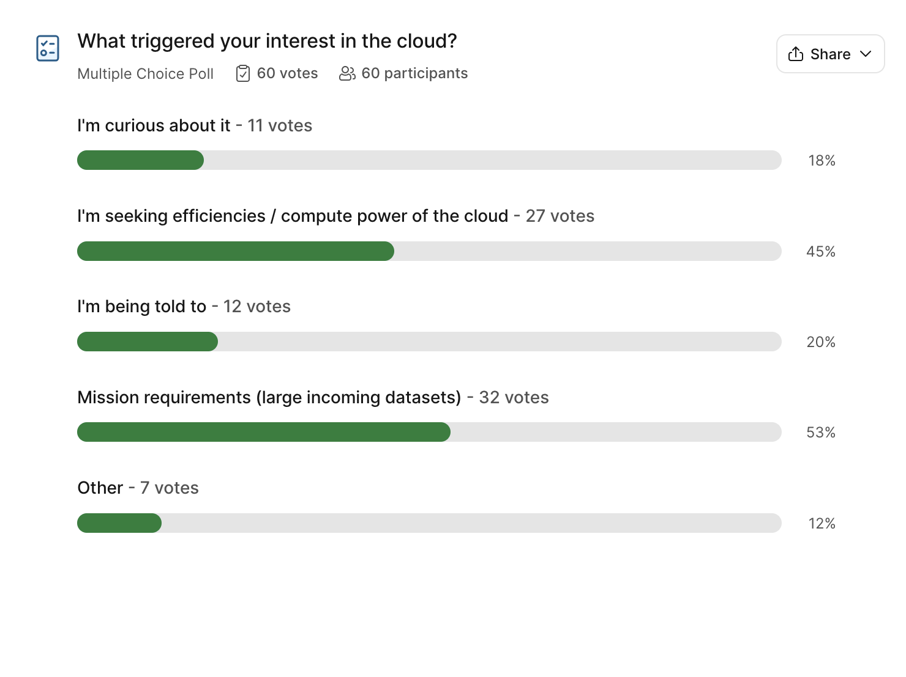
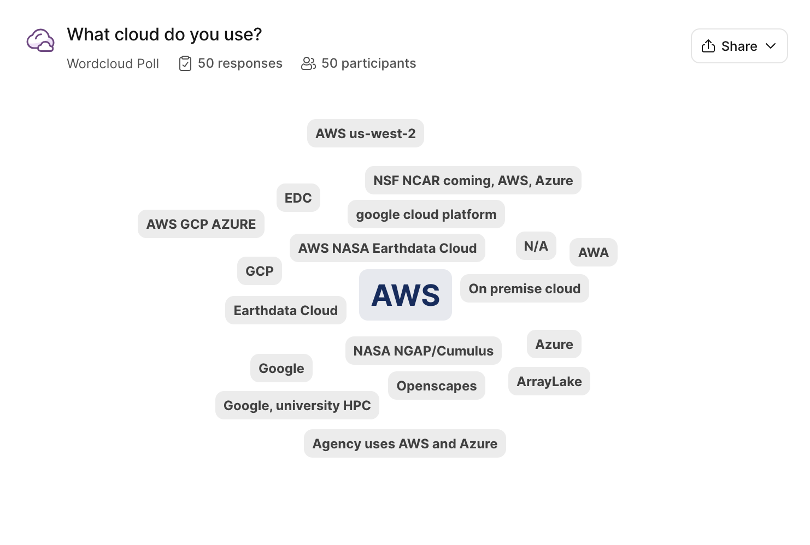

Onboarding and “fledging”: How NASA Openscapes supports NASA Earthdata users in the Cloud
Alexis Hunzinger ![]()
Danny Kaufman
Aaron Friesz
Michele Thornton
Andy Barrett
Rhys Leahy
Eli Holmes
Julie Lowndes
This is a brief summary of the session we led at the 2024 ESIP summer conference, focused primarily on the breakout group feedback from the session! We define Onboarding as a friendly first experience in the Cloud, framed via technical infrastructure, lessons on open science and cloud concepts, and social support. We define Fledging as a friendly set up for Cloud that works for me, including a plan, how to do it, how to pay for it. It means leaving the nest, soaring high and perhaps building your own nest.
Quicklinks:
The theme of the 2024 ESIP Summer meeting was “grounded in trust”, with a focus on ethics and establishing relationships. This theme rooted us: we’ve spent the last 3 years introducing people to the cloud for scientific computing, motivated by the fact that NASA is moving Earthdata to the cloud. We focused on helping scientists using NASA Earthdata and what this migration means for them. But only in the past year have we focused on “offboarding”, to complement our onboarding process (focused on where they go after they leave our JupyterHub) – but that term felt harsh, like walking the plank. We wanted a friendlier way to talk about this, so we call it “fledging” since people are spreading their wings after being in the “nest” with their nestmates, learning together in the JupyterHub we provide for workshop participants, in collaboration with our partners at 2i2c.
First, Alexis Hunzinger (GES DISC) shared Aronne Merrelli’s story (show-not-tell). Aronne was a participant in the 2023 NASA Openscapes Champions group, and found the Cloud to be a “superpower” - see this blog post summary and video of Aronne sharing with the 2024 Champions science teams.
Then, Aaron Friesz (LP DAAC) and Danny Kaufman (ASDC) broke down all the components that helped build that nest. This includes a central focus on researcher/user needs and iterating through teaching; How we work – openly, with synchronous and asynchronous space and place; and all the onboarding support for how they learn and work.

And then Julie Lowndes (Openscapes) and Eli Holmes (NOAA Fisheries) shared about fledging experiences so far - what we do and think about. This focused on where people fledge to and cost. Eli Holmes shared how she fledged in a different way, not only as a researcher but also as a facilitator who sets up infrastructure for others within her government agency. She shared how not all the participants leaving the nest are birds. Some are zebras and others are fish. Their needs when fledging are fundamentally different from those of the birds. And even among the birds, there is variety.

Breakout groups - participant feedback
Participants in the room self-identified as Cloud enablers/facilitators (60%), as well as Cloud users (35%) and neither (27%).

We asked participants to share their experiences in breakout groups. We wanted to know from our audience of cloud facilitators/enablers and cloud users, what solutions and challenges they have found when it comes to onboarding to and fledging from the Cloud. Between the feedback received during this breakout session and responses from a survey sent to past program participants about their current cloud usage and challenges, here are some common challenges and new points we haven’t heard before.
Stand out:
Create easy wins early on to make onboarding more encouraging!
Interest in learning how to set up environments via tutorials.
How does one find or qualify for these “onboarding” opportunities? It seems like there is a privilege based on who you know.
Common ones:
For onboarding, keep tutorials simple, but relevant to the discipline.
People feel successful and supported through many, open channels of connection (e.g. Slack, hack/coworking times, anonymous questions, etc.).
Some feedback from users: when I go to nasa.gov, I can’t find any cross-DAAC stuff, or earthaccess.
Not all data is in the cloud, we are still operating in hybrid mode.
It’s a challenge to spend time and energy optimizing legacy code and data formats for the cloud - it’s tempting to just “lift and shift”.
Organizational silos and management priorities are a barrier to experimenting with cloud capabilities.
The following screenshots illustrate participants responses to several questions. We include them here for readers to consider where their own communities land.


One thing we noted was that more people had thoughts about onboarding rather than fledging. And that’s ok! Fledging is very new to us as an idea, having really started talking about it last summer at ESIP and more readily (and calling it fledging) at AGU and this spring, in conversations with Yuvi Panda, Carl Boettiger, and Eli Holmes.
Closing thoughts
Julie Lowndes - ESIP is a great conference - for me it feels like RStudio and rOpenSci conferences, which means it is welcoming and highly productive and filled with friends everywhere - even when you don’t know them yet. This is my 4th year of ESIP confs (starting in 2020 when Erin Robinson invited me to keynote and this kicked off our NASA Openscapes collaboration!), and my second in person. Last year, I took away how Aaron Friesz remarked that “I’ve been to many ESIP conferences representing my data center (LP DAAC), but this year I felt like people saw me as someone to collaborate with as an expert on supporting users in the cloud”. This year, I’m taking away how embraced and loved “earthaccess” is. “Earthaccess” is a python library that has vastly improved everyone’s experience accessing NASA Earthdata programmatically (both locally and in the cloud). It was first developed by Luis López through working closely with Champions science teams and is now awesomely co-developed by a NASA open source community with contributors extending across DAACs, other parts of NASA, and beyond. I heard “earthaccess” everywhere, in talks, in hallways. People used “earthaccess” used like “Zoom” or “ggplot” - it’s a tool you use, no need to discuss further, we all know it as a vital part of the picture. I also really felt how the word “Openscapes” was used by many as an “us” or “we”; “Openscapes does this” means a community with many many people involved – and people see and feel that. This was always the vision that Erin Robinson and I have had, and I really felt it here. It was amazing.
Carl Boettiger, during a coworking debrief: Onboarding is a very visible thing, we can ensure there’s no sharp edges in the nest. But when you leave there are more edges - we can think of how to soften, where it works well, where there is a need. We can learn where there are training places and where it’s technical, what to develop to put in place.
Citation
@online{hunzinger2024,
author = {Hunzinger, Alexis and Kaufman, Danny and Friesz, Aaron and
Thornton, Michele and Barrett, Andy and Leahy, Rhys and Holmes, Eli
and Lowndes, Julie},
title = {Onboarding and “Fledging”: {How} {NASA} {Openscapes} Supports
{NASA} {Earthdata} Users in the {Cloud}},
date = {2024-08-30},
url = {https://openscapes.org/blog/2024-08-30-esip-summer-2024},
langid = {en}
}